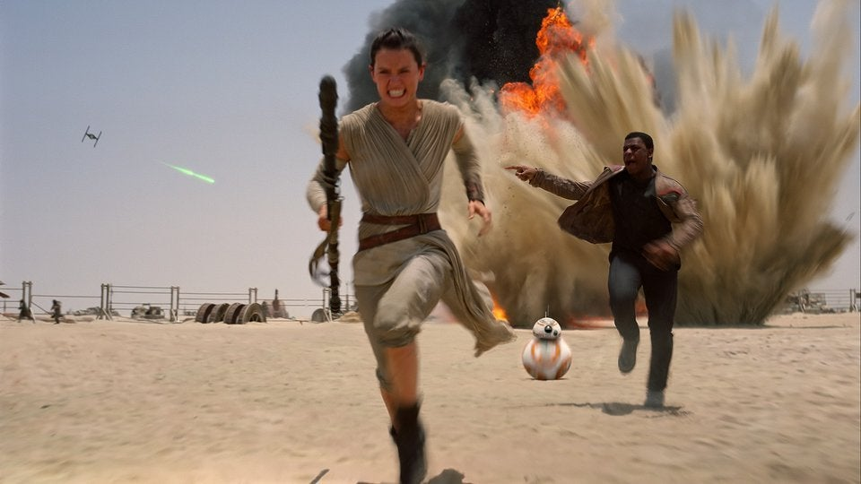
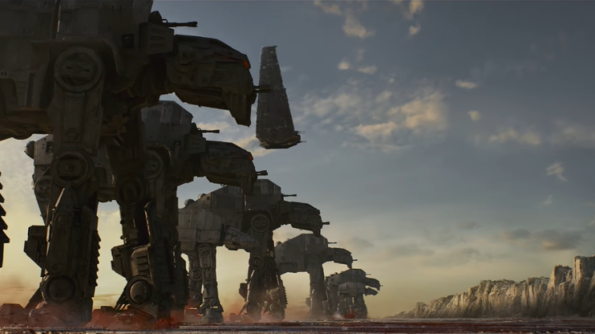
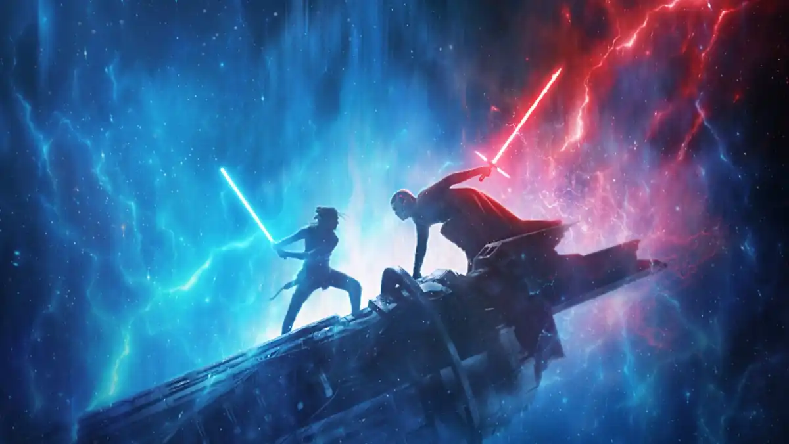

Treinta años después de la victoria de la Alianza Rebelde sobre la segunda Death Star, la galaxia tiene que
enfrentarse a una nueva amenaza: el malvado Kylo Ren y la Primera Orden. Cuando el desertor Finn llega a un planeta desierto conoce a Rey,
cuyo droide contiene un mapa secreto que Kylo Ren esta en busqueda de. Gracias al regreso de Star Wars a la pantalla grande esta película recaudo
$2,068,223,624 dólares por alrededor del mundo.

La Primera Orden ha acorralado a los últimos miembros de la resistencia. Su última esperanza es que Finn se introduzca en la nave de Snoke
y desactive el radar que les permite localizarlos. Mientras él trata, en compañía de una soldado de la Resistencia, de cumplir esta misión imposible, Rey se
encuentra lejos, intentando convencer a Luke Skywalker de que la entrene y la convierta en la última jedi. La segunda película de la ultima trilogia
logró recaudar $1,332,539,889 de dólares.

La Resistencia sobreviviente se enfrenta a la Primera Orden, y Rey, Finn, Poe y el resto de los héroes encararán nuevos retos y una
batalla final con la sabiduría de las generaciones anteriores. La conclusión a la saga de Skywalker llegó a generar $1,074,144,248 dólares.

En una película poco convencional de Star Wars un grupo de héroes atípicos se une en una misión suicida para robar los planos de "La Estrella de la Muerte",
el arma definitiva de destrucción del Imperio. Esta película toma lugar entre La venganza de los Sith y Una nueva esperanza. Logró recaudar $1,056,057,273 de dólares.